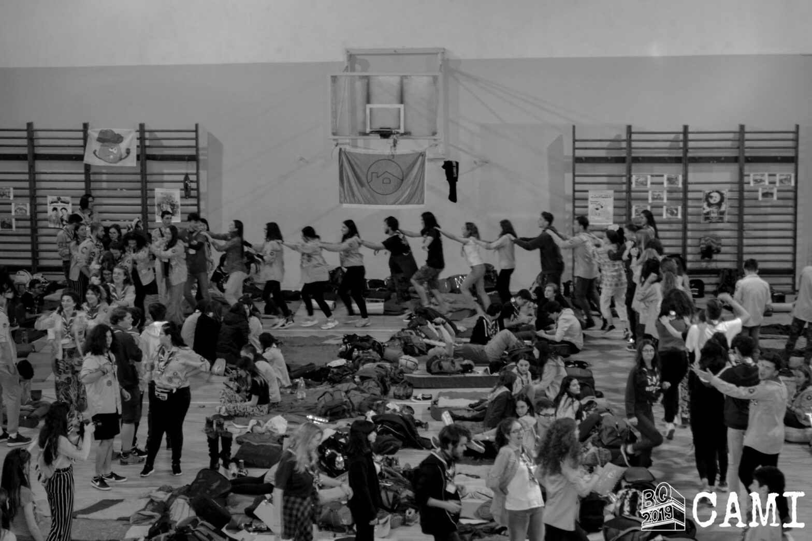

BQ 2019: prima mea participare la un eveniment național

Prima zi: țin minte că ne-am hotărât între noi să ne vedem mai devreme pe la ora 5-6pm (chiar dacă deschiderea era pe la 9pm) la Piață Universității. Patrula din care am făcut parte s-a numit patrula Praștie și din ea făceau parte: Ana, Alina, Clau, Mihai +Sânziana (de la CL Hunedoare), doar că noi am adoptat-o pentru acest eveniment. Ne-am plimbat prin oraș, am mâncat o înghețată, poze, alea, alea… Ajungem la liceul Ion Neculce și întrăm. Observ o mulțime de cercetași (pentru mine au părut foarte mulți, pentru ceilalți a fost ceva obișnuit cel mai probabil) și rămân șocat pentru 2-3 secunde. Întrebăm pe cineva din staff unde ne locul de “campare”, îl găsim, ne așezăm. După aia vine Adi și ne dă eșarfele de eveniment (sunt geniale), iar pe urmă începe deschiderea. Ne prezentăm patrula, alea, alea și da… închidere la ora 11pm.
A două zi: Ne trezim, mâncăm un sandwich de la Mega și după aia mergem la ateliere. Eu am fost la un atelier de improvizare a unui film cunoscut. Am făcut o parodie modernă la filmul Pirații din Caraibe: Blestemul Perlei Negre. Ne-am amuzat, jucat, ‘chinuit’ și că să fiu sincer a ieșit un filmuleț foarte interesant. După aceea am avut hike urban prin București cu o patrulă total diferită formată din cercetașii din toată țară. Checkpoint-urile au fost mai prin tot Bucureștiul,de ex: Muzeul Minovici, un parc de pe calea Victoriei, parcul Gradina Icoanei. Iar ca probe am avut ceva cu noduri, ceva mate, legați la ochi ținând în gură o lingură cu un ou și mergând ceva metri. În seară aceea ne m-ai jucăm niște joculețe cercetășești că de ex: English Bulldogs, Twister cu piciorul, rațele și vânătorii iar după aceea s-a mai cântat la chitară într-o clasa a liceului.
A treia zi: De dimineață la fel, mergem mâncăm ceva de la Mega. Apoi purcedem la primul atelier, al meu a fost destul de drăguț. Am avut un escape room destul de interesant. Am scăpat din el cam într-o ora, dacă nu mă înșel. După aceea am avut al 2-lea hike din cadrul BQ-ului. Am fost până în parcul Tineretului, unde am avut un joc de improvizare, pe urmă am fost în Grădina Botanică unde am avut o proba de orientare. După aia am ajuns în parcul Ateneului unde am avut de răspuns la o ghicitoare. Iar pe seară am fost cu patrula Cabanei și încă câțiva cercetași de prin București, Tulcea, Hunedoara la un suc/ceai în centrul vechi. Ne întoarcem pe la 10-11pm la liceu. Ne mai jucăm ceva joculețe, se cântă la chitară până la 1am, iar apoi ne trimite staff-ul la culcare.
A patra zi: De dimineață aceeași poveste. Pe urmă are loc închiderea evenimentului cu strigătul fiecărui centru local și se anunță patrulele câștigătoare. De la Cabana am avut doar un câștigător, acesta fiind Mihai care a câștigat locul 1 cu patrula sa de hike. Mergem să mai mâncăm ceva și ne luăm rămas bun de la Sânziana care avea să mai rămână cu niște prieteni cercetași, iar noi cei de la Cabană, fiecare spre ‘culcușul’ sau.
Pe scurt, a fost un eveniment foarte special și frumos pentru mine cu niște momente ce nu le voi uită nicioadată. Și așa mi-am , făcut prietenii noi mai din toată țară, mai ales din Tulcea și Craiova. Sper să mai am astfel de momente în diferite hike-uri urbane ca acesta deoarece am auzit că a fost ultima ediție de BQ…
Pe scurt scurt, genial! <3
Filip Florea (Don), Cabana Scout